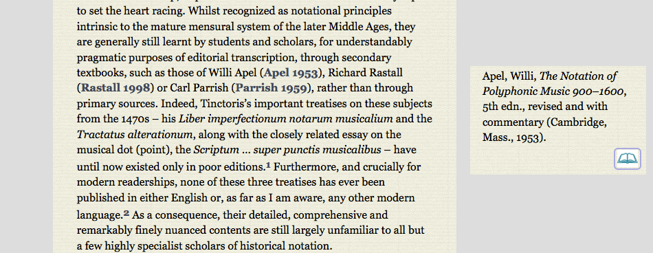

  <div class="content">
  	<div class="contentbox">
      <div class="explanation navigation">
          <div class="explanation-row">
            <div class="cell"></div>
            <div class="cell"><a href="../#">Up (website guide)</a></div>
            <div class="cell"></div>
          </div>
        <div class="explanation-row">
          <div class="cell"><a href="1.html">Back (bibliographic references)</a></div>
          <div class="cell"></div>
          <div class="cell"><a href="3.html">Next (multiple bibliography pop-ups)</a></div>
        </div>
      </div>
      <h3>Articles and other information pages: Bibliographic references II</h3>
      <p>When the mouse moves over a citation, the full reference
      becomes visible in the margin. Clicking on the book icon at the
      bottom of a reference box opens the full site bibliography in a
      separate window, marking the relevant entry with a side bar.</p>
      <p>Bibliographic references stay visible until they are clicked
      or the mouse moves over another reference. To keep the reference
      present so that <a href="3.html">several can be viewed
      together</a>, click on the citation itself.</p>
      <div class="helpshot h950">
        
      </div>
    <!--end .contentbox -->
  	</div>
    <!-- end .content -->
   </div>